A tecnologia já mudou o Direito. A doutrina ainda está decidindo o que fazer com isso.
A LADTEC é uma liga acadêmica dedicada a estudar, com método e rigor, o que a tecnologia está fazendo com o Direito — e o que o Direito pode fazer com a tecnologia. Não somos um grupo de entusiasmo tecnológico nem um clube de ceticismo: somos um espaço de pesquisa.
A liga existe porque há uma defasagem real. Sistemas de decisão automatizada, modelos de linguagem, análise de dados judiciais e infraestrutura digital já operam dentro do sistema de justiça, enquanto a formação jurídica ainda os trata como assunto de especialista. Nossa aposta é que essa separação não se sustenta.
Eixos de trabalho
Três frentes, um objeto
01
Inteligência artificial e Direito
Como sistemas automatizados afetam responsabilidade civil, prova, dever de motivação e devido processo. Do erro do modelo à atribuição jurídica desse erro.
02
Ciência de dados aplicada ao Direito
O que se pode aprender de jurisprudência, petições e dados públicos quando tratados como dados — e quais conclusões o método não autoriza.
03
Aproximação entre os campos
Traduzir tecnologia para juristas e Direito para quem constrói tecnologia. Formação, vocabulário comum e prática compartilhada.
Como funciona
O que a liga faz na prática
Encontros de estudo — leitura e discussão de casos, decisões e artigos, com preparação prévia e registro em ata.
Grupos de pesquisa — recortes temáticos que produzem artigo, parecer ou relatório ao fim do ciclo.
Produção acadêmica — submissão a eventos e periódicos, com apoio metodológico interno.
Formação aberta — oficinas e palestras para quem está começando, em linguagem acessível a estudantes de Direito sem base técnica.
Divulgação — conteúdo público que traduz o que a liga estuda, sem simplificação enganosa.
03eixos de pesquisa
00encontros realizados
00membros ativos
2026ano de fundação
A confirmar antes de publicar: instituição de vínculo, nome do professor ou professora orientadora, periodicidade dos encontros, número de membros, processo seletivo e canais oficiais. Os campos com 00 e o e-mail são exemplo.
Quem pode participar
Não é preciso saber programar
A liga é aberta a estudantes de Direito, de Computação e de áreas afins. Quem chega do Direito não precisa de base técnica; quem chega da tecnologia não precisa de formação jurídica. A exigência é outra: disposição para ler o que não domina e para escrever com precisão.
O que se pede de todo membro é constância nos encontros, preparação prévia da leitura e participação em ao menos um produto por ciclo — um artigo, uma oficina, um relatório.
Contato
contato@ladtec.org · @ladtec · Vitória da Conquista, Bahia
§1
A tese da marca
A identidade traduz o objeto da liga numa tensão deliberada entre duas linguagens. O bordô carrega a tradição jurídica: a toga, a encadernação, o requinte da doutrina. A prata organiza o sistema: linhas, molduras, divisores e acabamento.
A marca não resolve essa tensão — ela a encena. Todo material da LADTEC deve parecer uma publicação séria de Direito construída por alguém que entende de máquina.
Nunca: entusiasmada com tecnologia por si mesma, futurista, alarmista.
§2
Logotipo e sistema de marca
A marca é a palavra. Não há símbolo figurativo: a assinatura é o encontro tipográfico entre LAD e TEC, articulados por uma barra vertical. Os arquivos prontos estão na página Imagens.
2.1 Assinatura principal
LADTEC
Liga Acadêmica de Direito e Tecnologia
Positiva · sobre Papel
LADTEC
Liga Acadêmica de Direito e Tecnologia
Negativa · capa, slide e fundos Bordô
LADTEC
Liga Acadêmica de Direito e Tecnologia
Monocromática · carimbo, gravação, bordado
2.2 A regra de cor da assinatura
O bordô marca exclusivamente TEC. É a única coisa que ele significa dentro da assinatura.
A barra é sempre neutra — Tinta sobre fundo claro, Prata sobre fundo escuro. Nunca bordô, porque bordô já tem dono.
Sobre fundo bordô a distinção se suspende e a marca vai a uma cor só.
2.3 Construção da barra
A barra não é o caractere | digitado. Ela é um filete desenhado, com medidas relativas ao corpo do logotipo.
Atributo
Medida
Em um logotipo de 100px
Espessura
0,075 em
7,5 px
Altura
0,80 em
80 px
Afastamento lateral
0,20 em de cada lado
20 px
Tracking do nome
0,02 em
2 px
2.4 O que a barra significa
A barra é a interface: a superfície onde dois sistemas se tocam e trocam. Não é decoração e não é um "e" comercial. Uma barra vertical, tipograficamente, significa separação — chamá-la de "encontro" faria a forma e o texto dizerem coisas opostas. Interface é o nome que a computação dá à fronteira onde dois sistemas se comunicam, e é isso que a LADTEC estuda.
2.5 O ponto de articulação
O ponto é a barra vista de longe — a mesma articulação, reduzida, para peças onde a barra ficaria pesada.
Diâmetro: 3× a espessura da barra. Cor: Bordô, sempre.
Posição: centrado sobre filete horizontal de Prata de 1px.
Nunca: dentro da assinatura, solto no espaço, repetido em série ou como bullet.
Divisor com barra · peças a partir de A5 e slides
Divisor com ponto · Instagram, certificado e peças pequenas
2.6 Área de proteção e redução mínima
Área de proteção: margem livre igual à altura da letra L em todos os lados.
Redução mínima com descritor: 120px em tela, 34mm em impresso.
Redução mínima sem descritor: 90px em tela, 25mm em impresso.
Descritor: mínimo de 8pt ou 11px. Abaixo disso é suprimido.
2.7 Avatar e favicon
O Instagram serve o avatar em 40px no feed e cerca de 32px em comentários. A assinatura completa não sobrevive a isso — as sete letras em serifa de alto contraste empastam.
Tamanho
Versão
64px ou mais
Assinatura completa LAD | TEC em negativo sobre disco Bordô profundo
32 a 63px
Marca de canto L | T, mesma construção de barra
Abaixo de 32px
Apenas o L em Instrument Serif, Papel sobre Bordô
2.8 Usos proibidos
Digitar a barra como caractere | em vez do filete construído
Alterar espessura, altura ou afastamento da barra
Aplicar bordô na barra dentro da assinatura
Trocar a fonte, condensar, expandir ou inclinar a marca
Adicionar sombra, contorno, gradiente, brilho ou efeito metálico
Aplicar o logotipo sobre fotografia sem superfície de apoio
Acrescentar balança, martelo, pena, cérebro-circuito ou engrenagem
Usar o descritor abaixo de 8pt
As únicas exceções à regra de cor são técnicas: monocromia em carimbo, gravação, bordado e impressão a uma cor. Fora dessas quatro, a regra não admite exceção.
§3
Paleta
Duas cores não fecham um sistema — faltam superfície e texto. Clique em qualquer amostra para copiar o código hexadecimal.
3.1 Proporção
Aproximadamente 60% Papel · 25% Tinta e Grafite · 10% Bordô · 5% Prata. O bordô é acento, não fundo padrão.
3.2 A regra da prata
Prata sobre Papel tem contraste em torno de 2:1 — reprova nos critérios WCAG para qualquer texto, inclusive legenda.
A prata é material, não tinta: fio de 1px, borda de card, moldura de foto, barra em negativo, acabamento metálico no impresso. Para um cinza legível, use Grafite.
3.3 Combinações aprovadas
Fundo
Texto
Nível
Papel
Tinta
AAA
Papel
Grafite
AA
Papel
Bordô
AA
Bordô
Papel
AA
Bordô profundo
Papel
AAA
Prata clara
Tinta
AA
§4
Tipografia
Duas famílias, ambas gratuitas no Google Fonts. Uma terceira entra só quando houver dado na tela.
Quem responde quando o modelo erra
Instrument Serif Regular — display. Títulos, chamadas, logotipo. Tem um único peso: a hierarquia vem de tamanho, itálico e espaço em branco, nunca de negrito. Nunca em texto corrido nem abaixo de 20px.
Um sistema pode agrupar dez mil acórdãos por semelhança. Ele não sabe qual deles é o precedente que importa.
Inter Regular e Medium — texto corrido, legendas, retrancas, descritor, interface.
ART. 93, IX · CF/88 · 42.893 PETIÇÕES
JetBrains Mono Regular — opcional. Só números, dispositivos legais, dados e código, em 12px.
4.1 Instagram · 1080 × 1350px
Elemento
Fonte
Tamanho
Tratamento
Retranca
Inter Medium
28px
Caixa alta, tracking +12%, Grafite
Título
Instrument Serif
96–120px
Entrelinha 1.08, Tinta ou Bordô
Corpo
Inter Regular
40px
Entrelinha 1.5, Grafite
Assinatura
Marca completa
180px de largura
Sem descritor, rodapé do último card
4.2 Slides
Elemento
Fonte
Tamanho
Título
Instrument Serif
40pt
Subtítulo
Inter Regular
18pt, Grafite
Corpo
Inter Regular
20pt
Rodapé
Inter Regular
11pt, Grafite
4.3 Papers, certificados e documentos
Artigo submetido a periódico ou evento segue obrigatoriamente o template do edital — em geral Times New Roman ou Arial 12, ABNT. A marca não disputa com norma de submissão.
Em Word, Instrument Serif e Inter caem para Georgia e Arial: são as substituições presentes em todos os sistemas, e o Word não carrega webfont.
Elemento
Fonte
Tamanho
Título de capa
Instrument Serif
24pt
Nome do participante (certificado)
Instrument Serif
28pt
Título de seção (uso interno)
Inter Medium
14pt
Corpo (uso interno)
Inter Regular
11pt
§5
Tom de voz: a tradutora
A LADTEC explica tecnologia para juristas e Direito para técnicos. Não comenta de cima; traduz de dentro.
As três regras
1. Todo termo técnico chega ancorado num análogo conhecido — e vice-versa. Não se explica overfitting citando função de perda: explica-se como o perito que decorou os casos antigos e erra o novo.
2. Uma tecnicidade nova por parágrafo. Se a frase tem jargão jurídico e computacional ao mesmo tempo, um dos dois já precisa ter sido explicado antes.
3. A pergunta vem antes da tese. Abre-se com o problema que qualquer pessoa reconhece; a doutrina entra depois.
Na prática
NãoA opacidade algorítmica desafia o dever de motivação insculpido no art. 93, IX, da CF.
SimUma sentença precisa dizer por quê. Um modelo, por enquanto, não diz — e o art. 93, IX, não abriu exceção para isso.
NãoRedes neurais profundas revolucionam a análise de jurisprudência.
SimUm sistema pode agrupar dez mil acórdãos por semelhança. Ele não sabe qual deles é o precedente que importa — essa parte continua sendo sua.
Vocabulário vetado
revolucionardisrupçãoo futuro chegoua IA veio para ficarrobô juizgame changerferramenta poderosa
Registro por canal
Instagram e redes: "a gente", "você". Segunda pessoa, frases curtas.
Papers, certificados e comunicação institucional: terceira pessoa, impessoal.
Slides e aulas: primeira pessoa do plural.
O tom é o mesmo em todos. Só o registro muda.
§6
Regras de aplicação
6.1 Instagram
Fundo Papel como padrão. Post inteiramente Bordô profundo no máximo 1 a cada 5.
Filete de Prata de 1px separando retranca de título, com o ponto centrado.
Margem interna mínima de 80px na arte de 1080×1350.
Assinatura em 180px de largura, sem descritor, no rodapé do último card.
6.2 Slides
Filete Bordô de 5px no topo de todo slide de conteúdo.
Capa em Bordô profundo com a assinatura em negativo, largura de 30% da lâmina.
Máximo de três níveis hierárquicos por slide.
Sem grafismos tecnológicos genéricos: circuito, rede de pontos, hexágono, partícula.
6.3 Certificados
Margem mínima de 18mm; barra Bordô de 3mm na borda esquerda.
Nome do participante em Instrument Serif 28pt.
Assinatura no rodapé com 34mm de largura, descritor em 8pt ou suprimido.
6.4 Princípio de consistência
A aplicação não precisa repetir o logotipo em todo lugar. A identidade também é reconhecida pela combinação de Papel, Bordô, tipografia editorial, barra e ponto.
Quando houver dúvida, reduzir elementos antes de adicionar novos. A força da LADTEC está na contenção.
§7
Pendências
Verificar disponibilidade do @ladtec e do domínio
Fechar o vetor da assinatura em SVG e PDF, com contornos convertidos
Confirmar os dados institucionais marcados na página de Apresentação
Definir o e-mail institucional real
Produzir o template de camiseta para a gráfica
Decidir sobre a exploração do §8: arquivar ou desenvolver
§8
Exploração: sobreposição
Não aprovado · estudo
A barra articula os dois campos mantendo-os distintos. Esta exploração testa a hipótese oposta: e se eles estivessem sobrepostos, com uma zona de interferência onde as duas cores se somam?
A favor: sobreposição é o que acontece quando um campo invade o outro, e a zona escura é a área de conflito — o objeto de estudo da liga. Contra: prejudica a legibilidade, exige controle de blend que não sobrevive à impressão a uma cor e é difícil de aplicar por não-designers.
LADTEC
A · leve — o D e o T se tocam
LADTEC
B · profunda — mais interferência, menos nome
LADTEC
C · vertical — empilhamento
Se essa rota for adiante, ela substitui a barra — não convive com ela. Duas metáforas de encontro na mesma marca anulam uma à outra.
A variante C é a mais viável: preserva a leitura, cria a zona de interferência e funciona em uma cor só, porque a sobreposição vira variação de tom e não mistura de cor.
Arquivos de marca
PNG com fundo transparente
Todos gerados com as medidas do §2.3 e com a área de proteção já embutida no arquivo — não é preciso calcular margem ao aplicar. O quadriculado indica transparência.
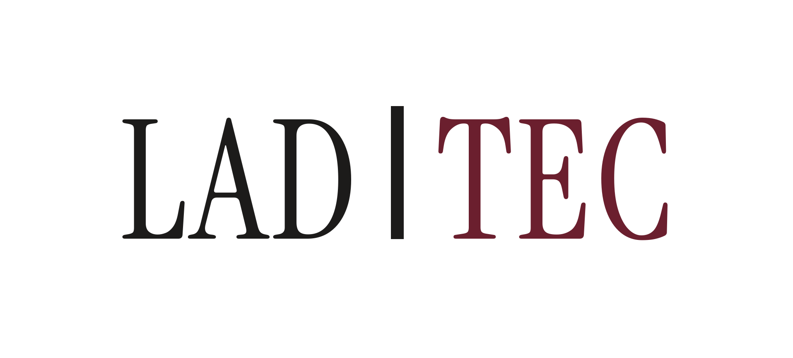
Assinatura positivaPara fundo claro. LAD em Tinta, barra em Tinta, TEC em Bordô.1915 × 864Baixar PNG
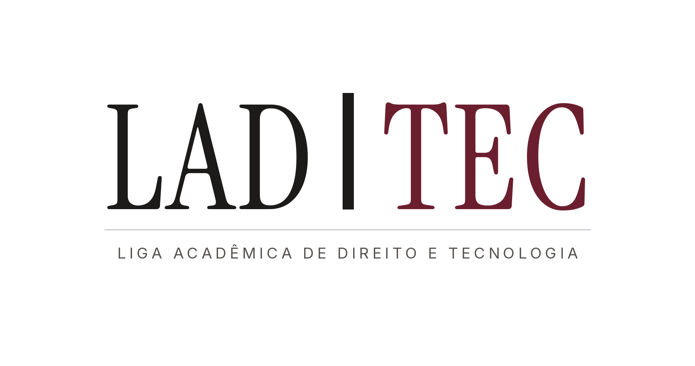
Positiva com descritorVersão institucional, com filete de Prata e o nome por extenso.1915 × 1008Baixar PNG
Assinatura negativaPara fundo Bordô ou escuro. Letras em Papel, barra em Prata.1915 × 864Baixar PNG
Negativa com descritorCapa de slide, banner de evento e foto de perfil grande.1915 × 1008Baixar PNG
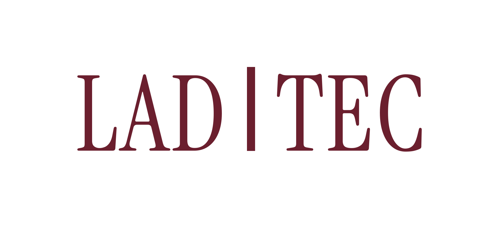
Monocromática BordôCarimbo, gravação, bordado e impressão a uma cor.1915 × 864Baixar PNG
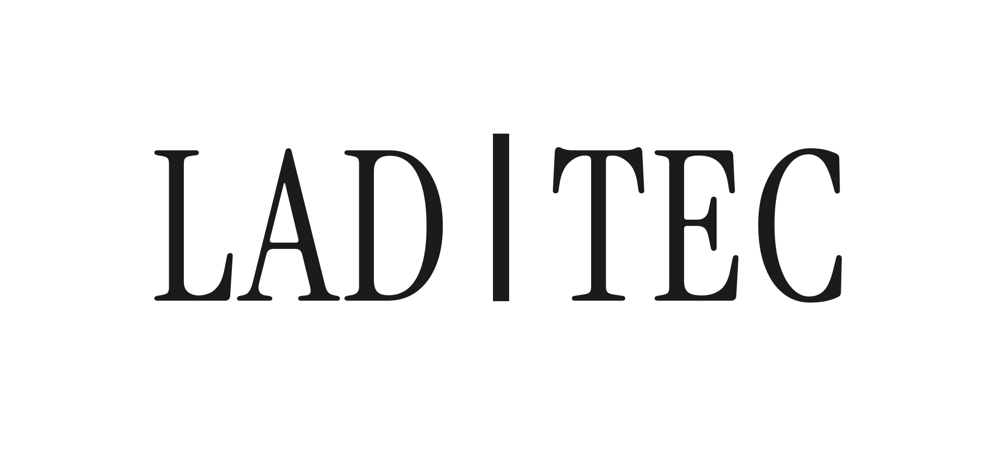
Monocromática TintaFax, xerox, documento em preto e branco.1915 × 864Baixar PNG
Monocromática PapelUma cor só sobre fundo escuro ou fotografia com tarja.1915 × 864Baixar PNG
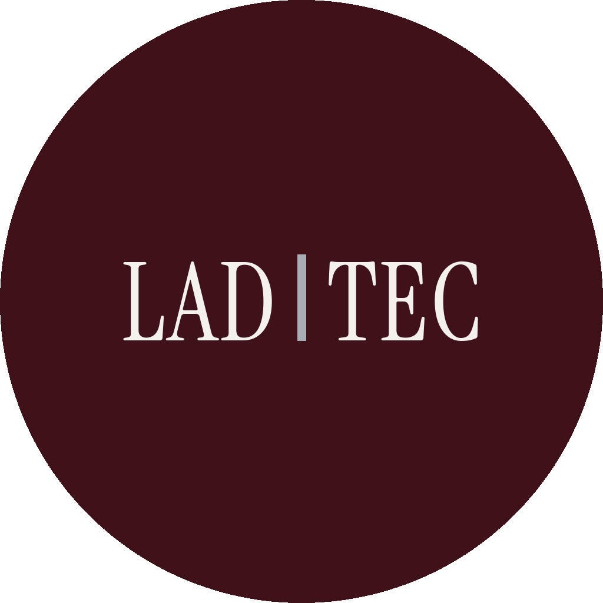
Avatar completoInstagram, LinkedIn, WhatsApp. Válido a partir de 64px.1024 × 1024Baixar PNG
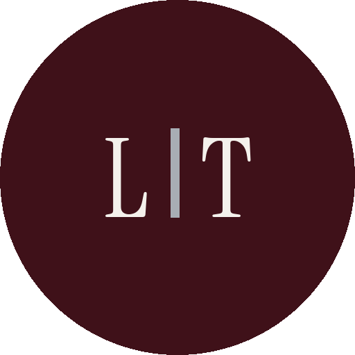
Marca de canto L | TPara 32 a 63px: comentários, stories, ícone de app.512 × 512Baixar PNG
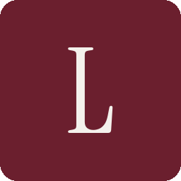
FaviconAbaixo de 32px, quando nenhuma outra versão sobrevive.256 × 256Baixar PNG
PNG é formato de pixel: ampliar acima do tamanho original serrilha as serifas. Para banner grande, placa, camiseta ou qualquer impresso acima de A3, peça o SVG — está na lista de pendências do §7 da diretriz.
Os arquivos com fundo transparente não devem ser aplicados diretamente sobre fotografia. Use tarja ou superfície de apoio, conforme o §2.8.
Referências de aplicação
Estudos iniciais
Capturas em baixa resolução dos primeiros estudos. Servem para consulta de direção, não como arquivo de produção — os templates editáveis estão na página seguinte.
AssinaturaComposição editorial com descritor e divisor de ponto.
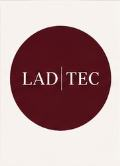
AvatarDisco Bordô com a assinatura em negativo.
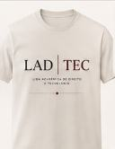
CamisetaMarca pequena, muito respiro, nada competindo.
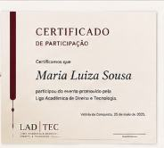
CertificadoEstudo inicial — a versão de produção está em Templates.
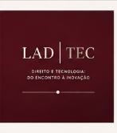
SlideCapa em Bordô profundo, marca em negativo.
Peças prontas
Templates
Vinte peças construídas com as medidas da diretriz — artes editáveis na página, além de um deck em PowerPoint e oito documentos em Word. Nas artes, todo texto é editável: clique e digite. O download sai em PNG no tamanho real de produção.
Card de capa1080 × 1350
Traduzindo · 04
O que é um embedding, e por que a perícia deveria se importar
Toda vez que um sistema “entende” um texto, ele vira número antes. Quem audita esse número?
Se o título passar de seis linhas, corte o título — não reduza o corpo.
Card final1080 × 1350
Traduzindo · 04
O nexo causal é uma pergunta sobre atribuição.
LADTEC
Fundo bordô no máximo 1 a cada 5 posts. Este é o lugar natural para gastar essa cota.
Template de slides · PowerPointSete lâminas-modelo em 16:9 (13,33 × 7,5"): capa, divisória de seção, título e texto com nota lateral, três blocos comparativos, citação, dados e encerramento. Cada uma vem com nota de orientação no painel do apresentador.Baixar .pptx
Use o .pptx para apresentar: as lâminas são editáveis, a hierarquia já está montada e o rodapé se repete. Os PNG abaixo servem para prévia, para post ou para quando você precisa de uma imagem solta.
Duplique a lâmina-modelo mais próxima em vez de criar slide em branco — é o que mantém a apresentação inteira dentro do sistema.
Capa1920 × 1080
LADTEC
Quem responde quando o modelo erra
Módulo 2 · Responsabilidade civil
Conteúdo1920 × 1080
Módulo 2 · Responsabilidade civil
Três teorias em disputa
E o que cada uma exige de prova.
Fato do serviço
Risco da atividade
Culpa do desenvolvedor
Liga Acadêmica de Direito e TecnologiaLADTEC
ParticipaçãoPara quem assistiu a encontro, oficina ou palestra. Campos de atividade, data e carga horária.Baixar .docxApresentação de trabalhoPara quem apresentou pesquisa nas atividades da liga.Baixar .docxMembroPara o quadro de membros ao fim do ciclo, com eixo e carga horária total.Baixar .docx
Os três em A4 paisagem, com barra Bordô de 3mm, nome em Georgia 28pt e duas linhas de assinatura. Use o Word para emitir em série — dá para fazer mala direta a partir de uma planilha de presença.
Para emitir um único certificado rápido, a versão em PNG abaixo resolve.
Certificado de participaçãoA4 paisagem · 1123 × 794
Certificado de participação
Certificamos que
Maria Luiza Sousa
participou do encontro Direito e Tecnologia: do encontro à inovação, promovido pela Liga Acadêmica de Direito e Tecnologia, com carga horária de 4 horas.
Coordenação · LADTEC
LADTEC
Liga Acadêmica de Direito e Tecnologia
Vitória da Conquista, 16 de agosto de 2026
Baixa em 3× (cerca de 3369 × 2382px), suficiente para impressão. O descritor está no mínimo de 8pt — não reduza mais.
Folha de rostoA4 retrato · 794 × 1123
LADTECSérie de pesquisa · 2026
Grupo de estudos · Responsabilidade civil
Winston não tem CPF
Lacunas de responsabilidade civil diante de agentes artificiais
Nome da autora Liga Acadêmica de Direito e Tecnologia
Vitória da Conquista · Bahia · Agosto de 2026
Sem imagem e sem logotipo em anexo — a marca é montada em HTML puro, então sobrevive a cliente de e-mail que bloqueia imagens.
LADTEC
Nome da pessoa
Diretoria de Projetos
Liga Acadêmica de Direito e Tecnologia
contato@ladtec.org · @ladtec
A serifa cai para Georgia porque Instrument Serif não existe em cliente de e-mail — é a substituição mais próxima disponível em todos os sistemas.
Cinco documentos em .docx, com cabeçalho e rodapé nas seções nativas do Word. Os blocos com fundo prata são instruções de preenchimento: selecione e escreva por cima.
OfícioComunicação institucional com destinatário, assunto e assinatura.Baixar .docxAta de reuniãoPresenças, pauta, deliberações, encaminhamentos e duas assinaturas.Baixar .docxDeclaraçãoVínculo, participação ou carga horária, em página única.Baixar .docxRelatório de atividadesObjeto, atividades, resultados, dificuldades e próximos passos.Baixar .docxArtigo acadêmicoCapa com a marca e miolo em ABNT: Times 12, entrelinha 1,5, recuo 1,25cm.Baixar .docx
A barra no Word não é o caractere |. Ela é uma célula de tabela de 0,6mm preenchida em Tinta, entre LAD e TEC, dentro de uma tabela sem bordas — a única construção em .docx que produz um filete real. Ao editar o cabeçalho, não apague essa coluna.
Salve cada arquivo como .dotx (Salvar como → Modelo do Word) para que ninguém sobrescreva o original por acidente.
{kind=link}
{kind=link}
{kind=link}
{kind=link}
{kind=link}
{kind=link}
{kind=link}
{kind=link}
{kind=link}
{kind=link}